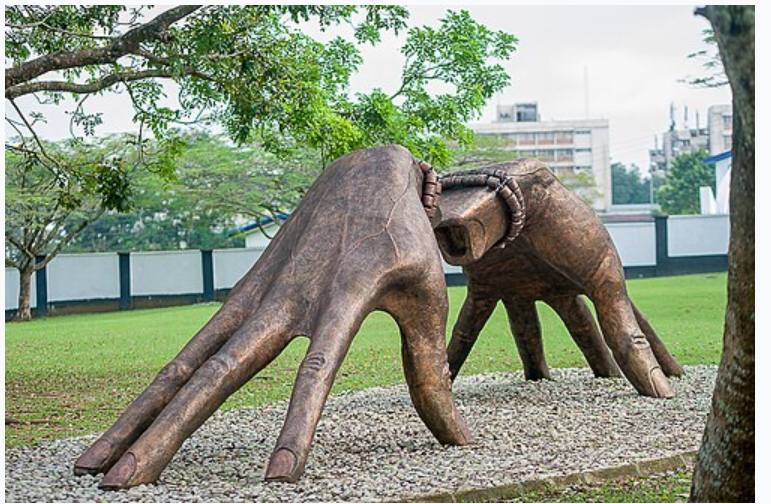
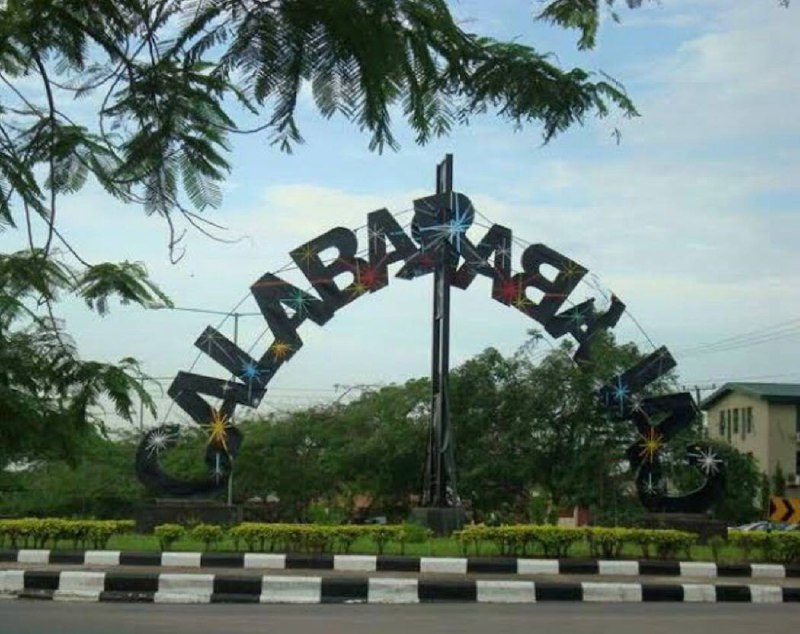

Gallery
Finger park
CalabarCalabar Roundabout

Calabar was once described as the tourism capital of Nigeria, especially due to several initiatives implemented during the administration of Donald Duke as the Governor of Cross River State (1999–2007). The city became the cleanest and most environmentally friendly city in Nigeria.
Explore more about the city of Calabar on Wikipedia.